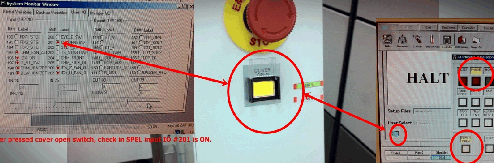
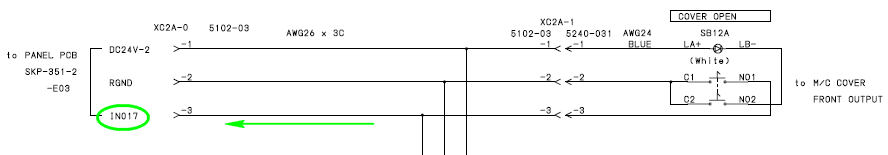
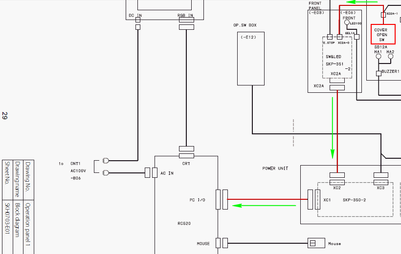

Service History
Subject: IDT (M) NS-7000 "Cover Open" door switch is not functioning
Handler Model: NS-7000(NS02, S/N: 18825)
Controller: RC520
Date: 3 Jun 2011
Symptom
IDT (M) NS-7000 18825 - "Cover Open" door switch is not function. Cover Open button pressed but handler still running.

Action
9 Jun 2011
1. Referring to page 29 of wiring diagram rev.4, sheet #SKH0703-E01. The front output, rear input and rear output are all connected in series to the front input on the front operation panel.
- Open the front operation panel side cover.
You will see the connectors on the front operation panel.
Remove the panel if necessary.
- Check on the panel board, XC2A-0 connector is not loose. Then remove and re-sit it.
- Next check the big XC2A connector. Make sure connector not loose.
Then remove and re-sit it.
2. Inside the PSUNT, remove TB180 terminal. You will see SKP-350-2 board behind it.
- On the board, check both the XC2 and XC1 connectors.
- XC2 connector comes from the front operation panel. XC1 connector goes to the PC I/O board. All these information can be seen on the same page 29.
- Re-sit both the connectors.
3. If the above fails, remove the RC520 controller pc.
Make sure you remember/take note the connector location where you remove from the pc.
- Swap another PC I/O card, make sure the selector switch on the board of old and new is same and is not accidentally changed before you close the pc.
- Power up and try.
4. Check VD1 zener diode is not broken at Front Operation Panel's PCB SKP-351.
5. Swap Front Operation Panel.


VD1 zener diode on Front Operation panel is spoilt causing COVER OPEN not functioning but handler did not stop running even when cover open pressed.
Replaced to another Front Operation Panel's PCB SKP-351, problem solved.
Cause
Zener diode on Front Operation Panel's PCB was found open circuit.
Remarks
See 0309-NS7K on other issues on this NS-7000.